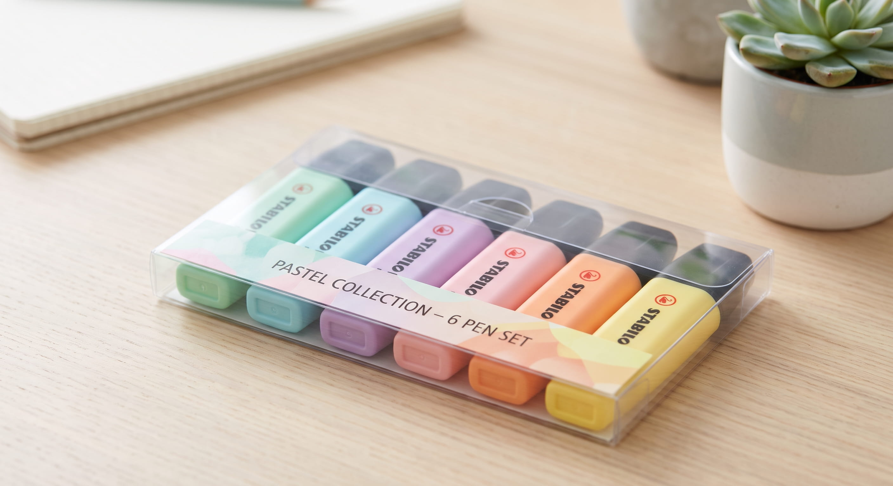
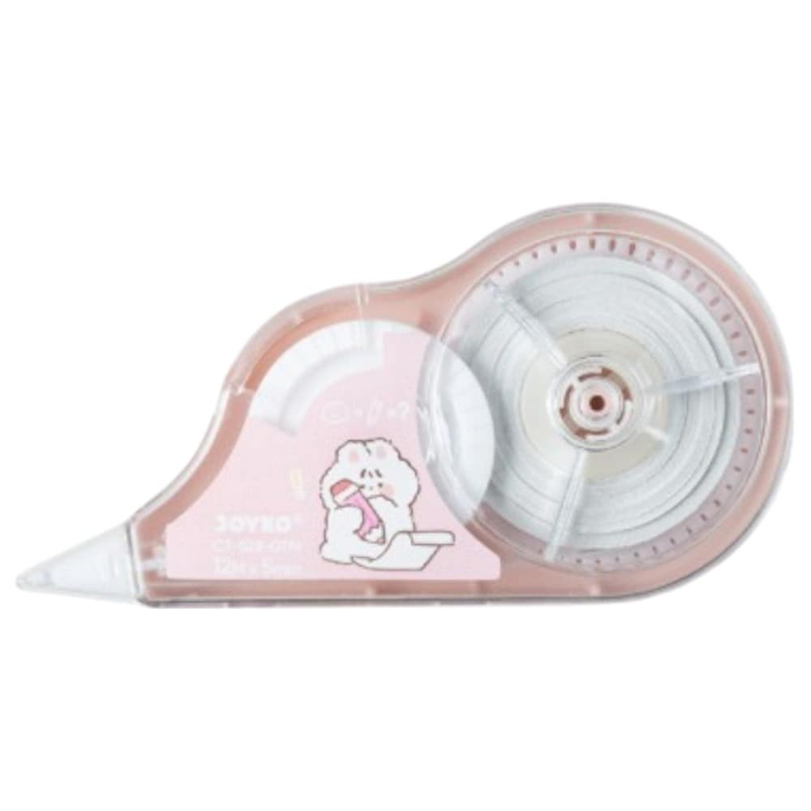
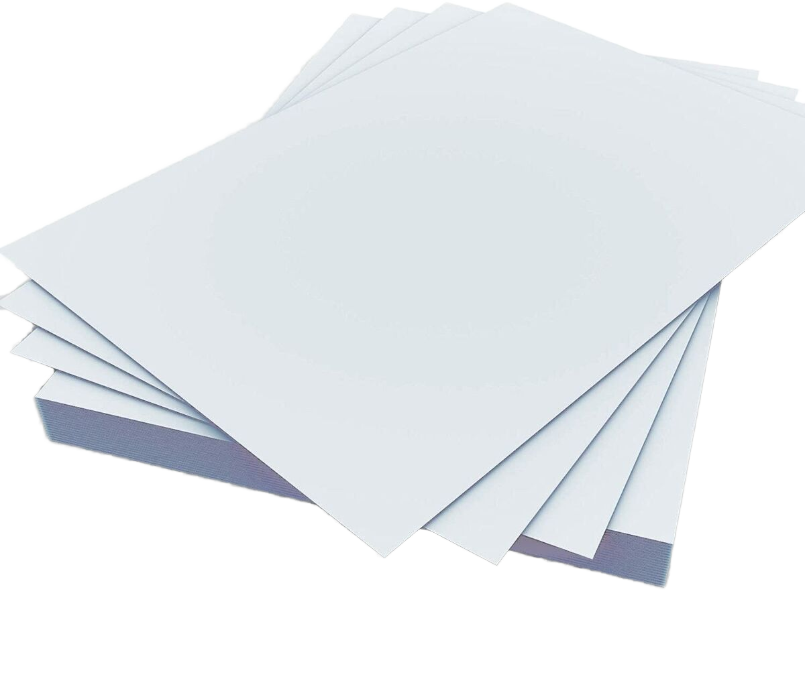
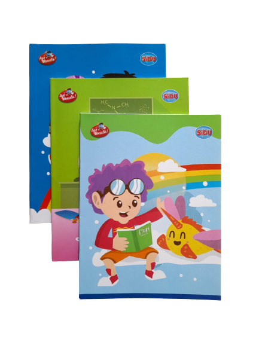
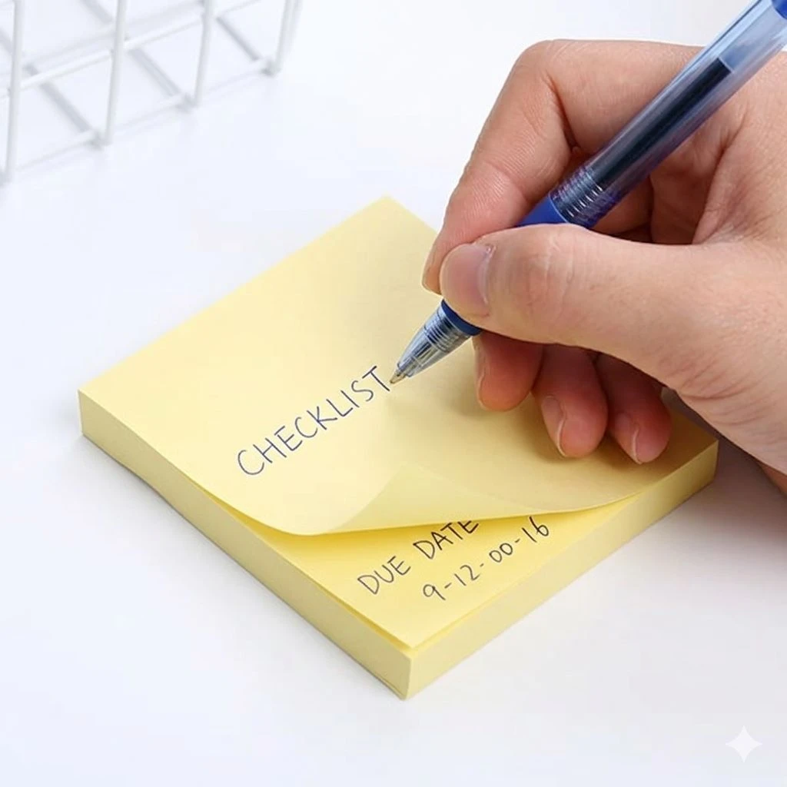
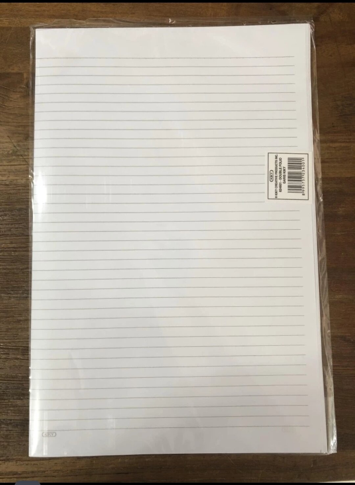
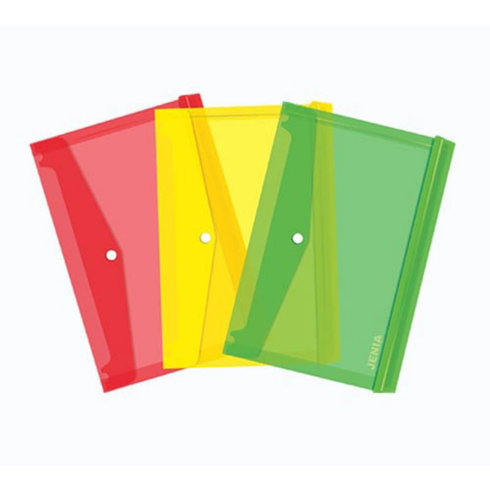
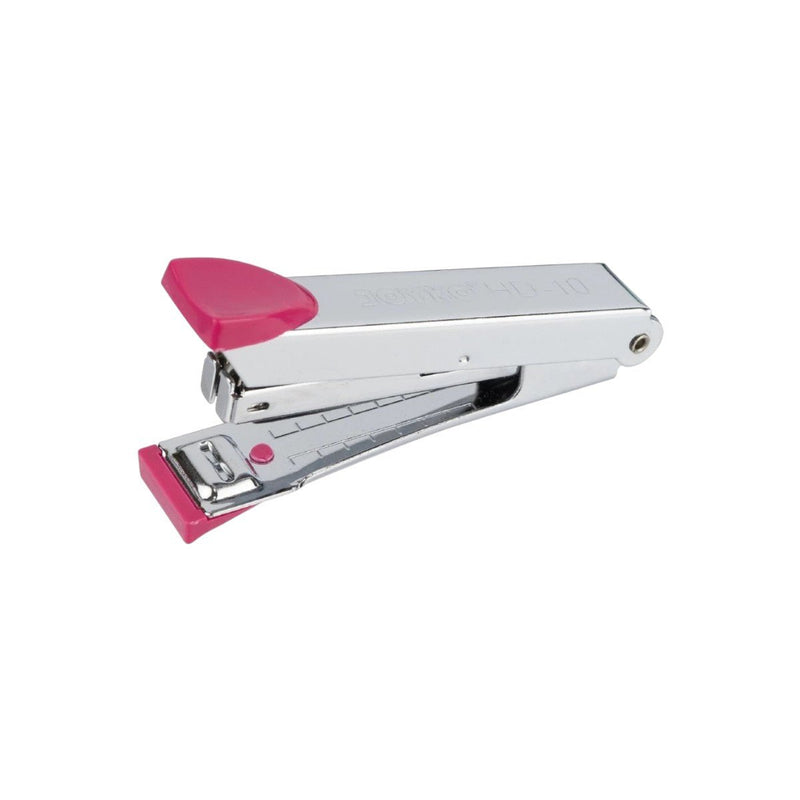
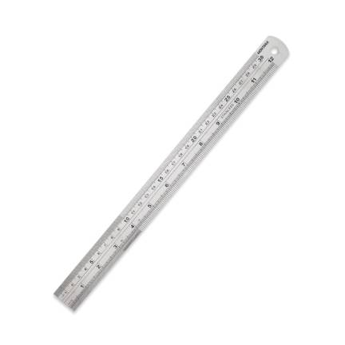
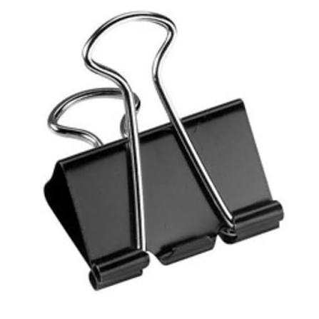

Pulpen Gel Hitam 0,5mm
Tinta hitam pekat, halus saat menulis, dan cepat kering di permukaan kertas.
Lengkapi kebutuhan alat tulis sekolah, kuliah, dan perlengkapan kantor Anda dengan kualitas terbaik dan harga bersahabat.
Tinta hitam pekat, halus saat menulis, dan cepat kering di permukaan kertas.
Grafit kuat tidak mudah patah dan terbaca jelas oleh mesin scanner LJK.

Highlighter warna lembut, tidak tembus kertas. Cocok untuk catatan estetik.

Pita koreksi rapi panjang 12 meter, langsung kering dan bisa ditimpa pulpen.

Isi 500 lembar, kertas putih cerah cocok untuk cetak dokumen dan skripsi.

Kertas halus bergaris jelas dan tebal tidak mudah tembus tinta pulpen.

Isi 100 lembar warna-warni cerah dengan daya rekat kuat untuk pengingat.

Kertas folio bergaris rapi untuk tugas sekolah, lembar jawaban ujian esai, dan surat lamaran kerja.

Melindungi berkas penting dari percikan air dan debu agar tetap tertata rapi.

Stapler ukuran standar HD-10 yang kuat dan nyaman digenggam untuk menjepit berkas.

Bahan stainless steel anti patah dengan skala milimeter yang tajam dan presisi.

Penjepit kertas berbahan baja kokoh untuk merapikan tumpukan arsip tebal.